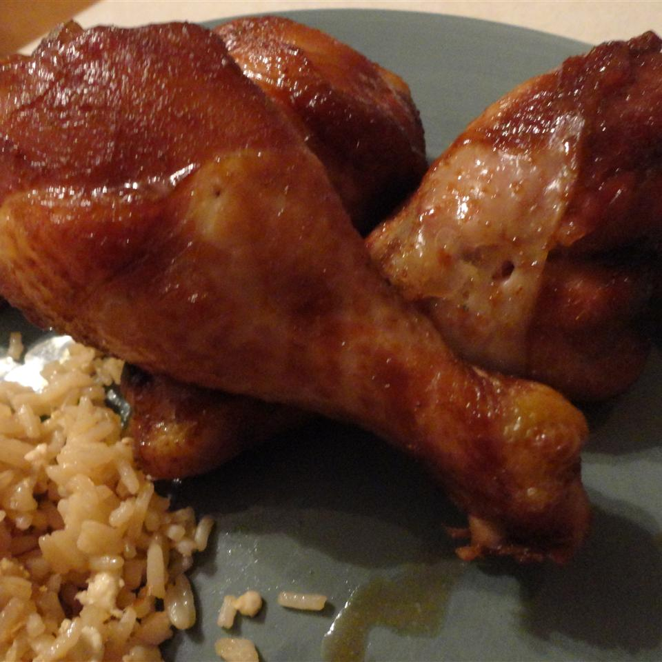

Teriyaki Chicken

Description
This teriyaki chicken is simple to make, and great in a pinch. This recipe yields 6 servings. It takes soy sauce, sugar, ginger, garlic, and a whole chicken.
Ingredients
- 1 (3 pound) whole chicken, cut in half
- 3/4 cup granulated sugar
- 3/4 cup soy sauce
- 1 tablespoon grated fresh ginger
- 2 cloves garlic, minced
Steps
- Rinse chicken halves, and pat dry with paper towels. Place chicken cut side down in a 9x13 inch baking dish.
- In a medium mixing bowl, combine sugar, soy sauce, grated ginger and garlic. Mix well, and pour mixture over chicken. Cover and refrigerate for at least 3 hours.
- Preheat oven to 350 degrees F (175 degrees C).
- Bake chicken uncovered in the preheated oven for 1 hour, basting frequently. Test for doneness, making sure there is no pink left in the meat. Let cool slightly, then cut into smaller pieces to serve.
Source
Teriyaki Chicken